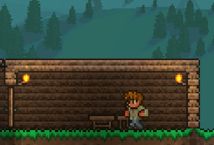
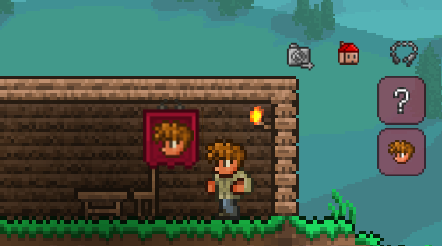
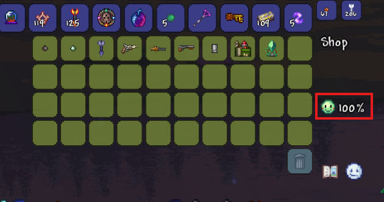

NPCs are important in terrraria because they will provide you with a variety of good resources that will aid you throughout your playthrough. However, your NPCs will need proper housing. To properly house an NPC, you need a big enough box, a full wall, torches to provide light, and a table/crafting bench and a chair. This will make your "house" habitable for NPCs

When there is a habitable space for an NPC, it should automatically put a banner like the one shown in the picture. If you cannot see it, go to your inventory and click the little house icon to find it. If an NPC doesn't automatically find housing or you want to move an NPC, click it's icon in the inventory screen and drag it to a habitable area.

This is the shop UI of an NPC. You can buy items from them by dragging items out of their inventory shop area to your inventory as long as you have enough coins to buy the item. The smiley face with the percent in the red box is the NPC's happiness meter. The percent is the discount you get on their items. For example, it says 75%, that means that the NPC is happy and is offering you their items for 75% of the original price. To make NPCs happier, make sure there are not too many NPCs in one area and letting them live next to their favorite people / in their favorite biome will also help their happiness.